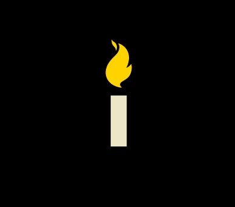

On May 25 at 8:20PM we're pausing our service in support of Black Lives Matter.
RIP George Perry Floyd Jr. (October 14, 1973 - May 25, 2020) and all those who've lost their lives through racial
injustice. Service will resume at 8:30pm, May25 after 9 minutes, 29 seconds.